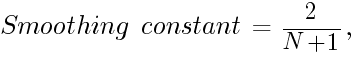
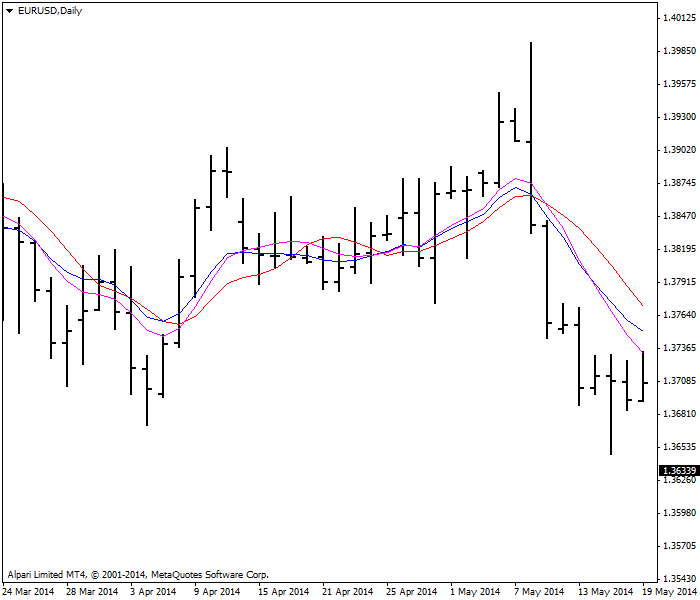
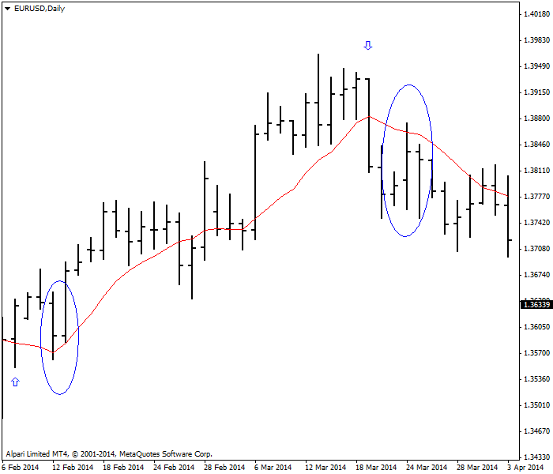

<!DOCTYPE html>
<html>
</html>
<head>
  <meta charset="utf-8">
  <meta http-equiv="X-UA-Compatible" content="IE=edge">
  <title>外汇站（fx-z.com） - 移动平均线</title>
  <meta name="description" content="">
  <meta name="viewport" content="width=device-width, initial-scale=1">
  <meta name="robots" content="all,follow">
  <!-- Bootstrap CSS-->
  <link rel="stylesheet" href="vendor/bootstrap/css/bootstrap.min.css">
  <!-- Font Awesome CSS-->
  <link rel="stylesheet" href="vendor/font-awesome/css/font-awesome.min.css">
  <!-- Google fonts - Roboto-->
  <link rel="stylesheet" href="https://fonts.googleapis.com/css?family=Roboto:400,300,700,400italic">
  <!-- owl carousel-->
  <link rel="stylesheet" href="vendor/owl.carousel/assets/owl.carousel.css">
  <link rel="stylesheet" href="vendor/owl.carousel/assets/owl.theme.default.css">
  <!-- theme stylesheet-->
  <link rel="stylesheet" href="css/style.default.css" id="theme-stylesheet">
  <!-- Custom stylesheet - for your changes-->
  <link rel="stylesheet" href="css/custom.css">
  <!-- Favicon-->
  <link rel="shortcut icon" href="img/favicon.png">
  <!-- Tweaks for older IEs--><!--[if lt IE 9]>
    <script src="https://oss.maxcdn.com/html5shiv/3.7.3/html5shiv.min.js"></script>
    <script src="https://oss.maxcdn.com/respond/1.4.2/respond.min.js"></script><![endif]-->
</head>
<body>
  <div id="all">
    <div class="container-fluid">
      <div class="row row-offcanvas row-offcanvas-left"> 
        <!--   *** SIDEBAR ***-->
        <div id="sidebar" class="col-md-4 col-lg-3 sidebar-offcanvas">
          <div class="sidebar-content">
            <h1 class="sidebar-heading"> <a href="https://fx-z.com">fx-z.com</a></h1>
            <p class="sidebar-p">介绍外汇相关的基本知识，告诉您如何进行自己的技术面和基本面分析，讲解先进的交易理念，并且为您阐述失败交易者与专业交易者之间的真正区别。 </p>
            <p class="sidebar-p">通过这些课程的学习，您将学会如何根据自己的优势来应用情绪分析，还将了解真实世界的事件会对货币汇率产生什么影响，央行在外汇市场中所发挥的作用，以及交易者在颇受欢迎的即期外汇交易中有哪些选择方案。 </p>
            <ul class="sidebar-menu">
                <!-- Link-->
                <li class="sidebar-item"><a href="https://fx-z.com" class="sidebar-link">首页</a></li>
                <!-- Link-->
                <li class="sidebar-item"><a href="cihui.html" class="sidebar-link">外汇词汇</a></li>
                <!-- Link-->
                <li class="sidebar-item"><a href="ebook.html" class="sidebar-link">获取外汇电子书</a></li>
            </ul>
            <p class="social"><a href="https://www.cn-forextime.com/zh?partner_id=4920383" target="_blank"data-animate-hover="pulse" class="external facebook"><i class="fa fa-eur"></i></a><a href="https://www.cn-forextime.com/zh?partner_id=4920383" target="_blank" data-animate-hover="pulse" class="external gplus"><i class="fa fa-gbp"></i></a><a href="https://www.cn-forextime.com/zh?partner_id=4920383" target="_blank" data-animate-hover="pulse" class="external twitter"><i class="fa fa-rmb"></i></a><a href="https://www.cn-forextime.com/zh?partner_id=4920383" target="_blank" title="" class="external instagram"><i class="fa fa-dollar"></i></a><a href="https://www.cn-forextime.com/zh?partner_id=4920383" target="_blank" data-animate-hover="pulse" class="email"><i class="fa fa-money"></i></a></p>
            <div class="copyright text-center text-md-left">
             
              
            </div>
          </div>
        </div>
        <!--   *** SIDEBAR END ***  -->
        <!--   *** DETAIL ***-->
        <div class="col-md-8 col-lg-9 content-column white-background">
          <div class="small-navbar d-flex d-md-none">
            <button type="button" data-toggle="offcanvas" class="btn btn-outline-primary"> <i class="fa fa-align-left mr-2"></i>菜单</button>
            <h1 class="small-navbar-heading"> <a href="https://fx-z.com/8-2.html">下一篇 </a></h1>
          </div>
          <div class="row">
            <div class="col-xl-10">
              <div class="content-column-content">
                <h1>移动平均线</h1>
       <p>
    移动平均线并无任何花哨、奇妙之处。它的名字并不特殊，因此您无法将它吹嘘成一种特别的神秘工具。而且，它或许是技术分析工具中最有用的技巧以及许多指标的基础。如果您试图从图表中看出规律性，移动平均线能通过消除被称为“噪音”的异常高点和低点并寻求中心点来让您如愿以偿。移动平均线平滑异常高点和低点之后，您可以一目了然地看清价格走向，从而解放您的双眼。移动平均线大致展示了当前的价格走向，但总是具有滞后性。
</p>
<p>
    <strong>计算</strong>
</p>
<p>
    移动平均线是一系列价格（通常为收盘价）的平均值；您可以在它的基础上加上新时段数据，然后减去首个时段的数据，以保持时段数据的连续性。例如，您有 10 个时段的价格。将它们相加，然后除以 10。进入下一时段后，您可以去掉首个数据点，用剩下的数据加上今日的新数据，然后再除以 10。通过添加、删除时段，平均价发生“移动”。
</p>
<p>
    这就形成了一条移动平均线。每个数据点都有对应的权重。您可以为近期数据增加权重，以便移动平均线更接近当前价格，而且更能代表目前的情况。您可以采用两种方式：一种是指数移动平均线，另一种是加权移动平均线。确切地说，这两者都是“加权”移动平均线。前者是指数式加权，而单纯的“加权”是对每个数据点进行逐步加权。所有交易平台均提供这些移动平均线类型，因此您无需知道它们的手动计算方法，虽然您可以用 Excel 或类似软件轻松操作。
</p>
<p>
    <strong>加权移动平均线</strong>
</p>
<p>
    例如，您有 3 个数据点。您为今日价格加权 3，为昨日价格加权 2，为首日价格加权 1。今日价格的权重是三天前价格权重的 3 倍。在下表的示例中，USD/JPY 的加权移动平均线为 ¥100.63，略高于简单移动平均线，但它准确反映了第 2 天和今天之间更大幅的价格动向。
</p>
<p>
    技巧：一定要记得将加权系数正确地相加。人们容易忘记，当您乘以一个系数后，基数不会发生变化，但当您将它添加至价格序列之后，价格序列会上升一位。这可能明显得不值一提，但如果您将加权总和除以 5，而不是 6，那么之后的错误可能会让您感到恼火。
</p>
<p>
     
</p>
<p>
    <strong>指数移动平均线</strong>
</p>
<p>
    指数移动平均线的计算方式不采用固定数值的权重，而是通过“平滑常数”进行计算，而且移动平均线每种具体天数的“平滑常数”是固定的。其计算公式为
</p>
<p>
     
</p>
<p>
    其中，N 是指时段数。
</p>
<p>
    例如：
</p>
<p>
    10 日 EMA（指数移动平均线） = 2 / (10 + 1) = 18.8%
</p>
<p>
    20 日 EMA = 9.52%
</p>
<p>
    50 日 EMA = 3.92%
</p>
<p>
    这些百分比应用于最后被添加至价格序列的数据点，因此 50 日指数移动平均线最后一个数据点的权重为 3.92%，但 10 日指数移动平均线的相应权重明显高很多，为 18.8%。指数移动平均线近期数据的权重最大，而且迄今为止一直是外汇图表中最常用的移动平均线技巧。
</p>
<p>
    以下是三种移动平均线的对比。最顶端的红色线是简单移动平均线。下面的蓝色线是指数移动平均线。底部的紫色线是加权移动平均线。
</p>
<p>
     
</p>
<p>
    <strong>移动平均线的三种类型：</strong>
</p>
<p>
    <br/>
</p>
<p>
    <strong>&nbsp; ——简单移动平均线&nbsp; &nbsp;——指数移动平均线&nbsp; &nbsp;——加权移动平均线</strong>
</p>
<p>
    最常用的时段数字为 10 时段、20 时段、50 时段和 100 时段。每日图表通常会添加 200 日数据，因为这是一个神奇的“长期”数字，而且当它接近当前价格时会发挥强大的作用。有些分析师将 100 和 200 时段用于所有图表，甚至是每小时图表中，虽然没有证据证明这些时段数据能带来任何特别的价值。例如，重要性不亚于花旗集团的技术分析团队有时将 200 日移动平均线用于 4 小时图表。正如所有技术分析所涉及的问题一样，如果有足够数量的交易者买入，那么确定指标是非常重要的，同时可以用它来分析市场动向。
</p>
<p>
    <strong>交叉信号</strong>
</p>
<p>
    这是一项将价格与移动平均线交叉作为交易信号的常用技术。例如，您在图表中采用 10 日移动平均线，而且在价格上穿 10 日移动平均线时买入，并在这条平均线下穿 10 日移动平均线时卖出。这是一条行之有效的基本交易规则。以下示例图显示价格上穿移动平均线，箭头部分表示“买入”。在图表右侧，您可以见到一个下行交叉点和向下的箭头——卖出信号。如果您已经执行这项交易，而且在交叉点后一天的开盘价买入、在下行交叉点当天的收盘价卖出，您将获得 147 点盈利：
</p>
<p>
     
</p>
<p>
    <strong>价格与移动平均线交叉点交易策略</strong>
</p>
<p>
    在 02/10/14 开盘价——1.3627 买入。在 03/20/14 收盘价——1.3774 卖出。区别：147 点。
</p>
<p>
    但是您马上会发现这项交易规则的问题——如圆圈处所示，价格有时会与移动平均线出现一两天的背离。在本例中，我们忽略一天的背离情况，但如果您不折不扣地遵循交易规则，您将遭遇双重损失——一两天后只能离场，而且只能恢复至原来的头寸。在价格/移动平均线交叉点交易规则中，双重损失非常常见。一项可能的解决方案是要求价格反转一天以上，或两至三天。您还可以为移动平均线添加安全保护，理想情况是根据最佳点数的历史数据进行增加或删减，以避免双重损失。请注意，由于趋势偏差，虚假下行交叉点的最佳点数可能与虚假上行交叉点的最佳点数不同，而且最佳点数将随着货币波动性变得更大或更小而发生改变。
</p>
<p>
    <strong>专业建议：如果您打算将移动平均线应用于图表中，请始终使用对 10 时段、20 时段等使用相同的颜色。您将迅速下意识地发现价格与这些重要移动平均线的相关之处。</strong>
</p>
<p>
    <br/>
</p>
<p>
    <br/>
</p>
              </div>
            </div>
          </div>
        </div>
      </div>
    </div>
  </div>
  <!-- JavaScript files-->
  <script src="vendor/jquery/jquery.min.js"></script>
  <script src="vendor/popper.js/umd/popper.min.js"> </script>
  <script src="vendor/bootstrap/js/bootstrap.min.js"></script>
  <script src="vendor/jquery.cookie/jquery.cookie.js"> </script>
  <script src="vendor/owl.carousel/owl.carousel.min.js"></script>
  <script src="vendor/masonry-layout/masonry.pkgd.min.js"></script>
  <script src="js/front.js"></script>
</body>